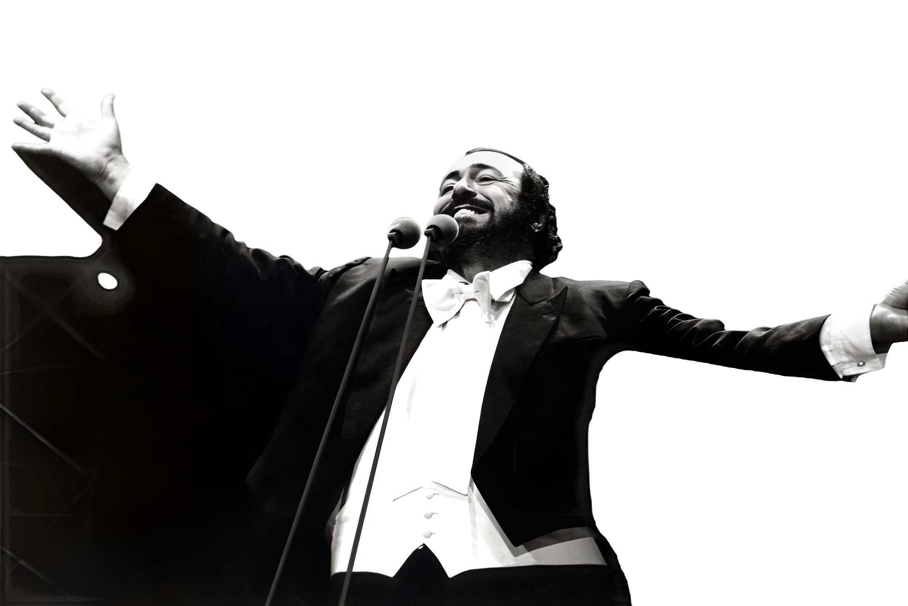

THE VOICE. THE LEGEND
LUCIANO PAVAROTTI
One of the greatest Opera tenors of all time.
His voice continues to inspire the world.

ABOUT THE MAN BEHIND THE VOICE
A LIFE DEVOTED TO MUSIC
Born in modena, italy, in 1935. Luciano pavarotti's extraordinary voice and passion for music brought opera to millions around the world. From humble beginings to the world's greatest stages. His journey is a testament of talent, hardwork , and a love for people.

A UNIQUE VOICE
A voice of unmatched power, beauty and emotion
GLOBAL ICON
He brought opera beyond walls and into the heart of millions
THE LASTING LEGACY
His music and spirit continue to inspire generations
FREQUENTLY ASKED QUESTIONS
FAQ